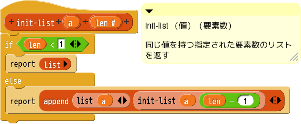
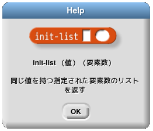
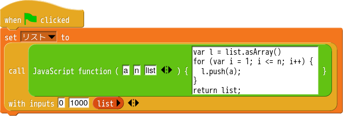

Snap! プログラミング
Snap!(Build Your Own Blocks) は Scratch の機能拡張版プログラミング環境です。Scratch は MIT で、Snap! は Scratch を基に UCLA Berkeley 校で開発されました。テキストベースのプログラミング言語の場合、予約語など基本的な命令構文を知らないと使えません。スペルなどを一文字間違えただけでもエラーになってしまいます。Scratch や Snap! では、すべて表示されているブロックから選んでプログラミングしていくのでとても入りやすいと思います。Scratch が初心者向けに機能を絞り込んであるのに対し、Snap! はいろいろとプログラミング言語としての機能を付加した内容になっています。デフォルトのスプライトが なので大人でも抵抗なく使えるのではないかと思います。Scratch はプログラムの動作を逐次指定していく命令型プログラミング言語です。ユーザー定義ブロックはありますが、複数箇所での同じような処理を一つにまとめる程度の意味合いでした。定義ブロック内で変数を作ることはできず、値を返すこともできません。Snap! の定義ブロックは制御型、値や true や false をリポートするリポーター型となんでも作成できます。イベントハットブロックも作成できます。Snap! は Scratch の皮を被った Scheme と言われるように、関数型のプログラミングがしやすくなっています。入力に対応した値を返すブロックを組み合わせていくやり方です。値を返すブロック、関数型のブロックを基本にするとそのブロックのテストが容易になります。Scratch にはない Snap! の特徴として、デバッグ機能があります。実行速度を調節してステップ実行させたり、実行中のブロックをハイライトさせてリポーターブロックの値をリポートします。強力なプログラミング学習支援です。
Snap! の機能の一端を例示してみます。
Scratch では次のようにして、要素の値 0 の 1000 個のリストを作成します。
Snap! でも同じようなやり方ができますが、他にもいろいろな方法があります。Scratch ではリスト用の変数は別に用意されていましたが、Snap! では、変数にはリポーターブロックならなんでも入れられます。
1 番目の方法は reshape ブロックを使用しています。これは APL 言語の機能を取り入れたものです。Snap! では多次元の配列を扱うことができます。配列の形を変更する reshape ブロックを応用しています。

2 番目の方法は指定されたリストの各要素に対して指定された操作を行ったリストを作成する map を応用したものです。灰色のリングと呼ばれる部分にスクリプトを入れることができます。この場合は、ただ 0 を返しているだけです。

3 番目の方法は APL 言語の機能を取り入れたものです。リストに対して演算を行うと各要素それぞれに演算をほどこしたリストを得ることができます。このような機能は R 言語や Julia 言語にも備わっています。
4 番目の方法は指定した値を要素とした指定の長さのリストを作るブロックを作成する例です。再帰呼び出しを使っています。右側のものができたブロックを使用したものです。要素の値(0)、長さ(1000) を引数としています。この定義のようにコメントを付けると、ブロックにヘルプ表示をさせることができます。なお、ver.11 から変数 a を list で囲う必要がなくなりました。
 5 番目の方法は JavaScript のコードを使って処理をするものです。要素の値(0)、長さ(1000)、空のリストを引数としています。JavaScript の配列を Snap! のリストとして扱うことができないので、空のリストを受け渡し用に使用します。JavaScript でプログラミングができるので既存のブロックだけでは作れないものも作れてしまいます。
Scratch にはないブロックばかりで戸惑われるかと思います。Scratch ではできなかったり、いろいろと手段を駆使する必要があることも Snap! だとスマートにできたりします。Snap! はバージョンアップが頻繁に行われていて、機能の改良や追加がなされています。
Snap! の解説 PDF
Scratch については書籍も豊富に出回っていて Web での情報も多いのですが、Snap! については日本語での情報が少ないのが現状です。Snap! サイトから情報を得るのが一番だと思いますが、理解の一助になれば幸いです。
加筆修正中ですので最新版をご利用ください。
Snap! の解説II PDF
容量の関係で再帰呼び出し以降の項目を別文書にしました。
加筆修正中ですので最新版をご利用ください。
「作図チャレンジ」を使ったプログラミング入門
ステージ上に簡単な図形を描くことで、プログラミングの基本である「順次実行」「条件分岐」「繰り返し」を体験します。 Snap! 入門と言うよりはプログラミング入門を意図しています。ステージに表示された図形に沿ってスプライトが動いて同じ図形を描くように、自分で考えてブロックを組み立ててもらうパズル集のようなものです。プログラミング初心者のために作図に必要なブロックを Pen パレットのところに集めています。つまり、条件分岐やループなどほとんどのものがカスタムブロックでまかなえるという例にもなっています。